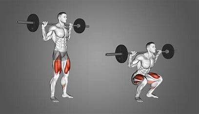
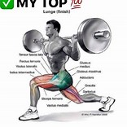
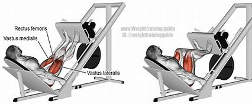
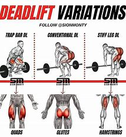
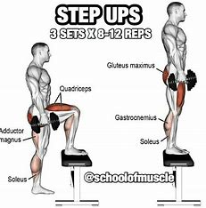
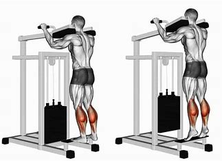

7 Leg Workouts
1. Squats

Stand with your feet shoulder-width apart.
Lower your body by bending your knees and hips, keeping your back straight.
Push through your heels to return to the starting position.
2. Lunges

Stand upright, step forward with one leg.
Lower your hips until both knees are bent at about a 90-degree angle.
Push back up to the starting position and repeat with the other leg.
3. Leg Press

Sit on the leg press machine with your feet shoulder-width apart on the platform.
Push the platform away by extending your knees and hips.
Slowly return to the starting position by bending your knees.
4. Deadlifts

Stand with your feet hip-width apart, holding a barbell in front of you.
Bend at your hips and knees to lower the barbell to the ground.
Lift the barbell by straightening your hips and knees, keeping your back straight.
5. Step-Ups

Stand in front of a bench or step.
Step onto the bench with one leg, then bring the other leg up to stand on the bench.
Step back down with the same leg and repeat with the other leg.
6. Leg Curls
Lie face down on the leg curl machine with the pad against your lower legs.
Curl your legs up as far as possible while keeping your hips down.
Slowly return to the starting position.
7. Calf Raises

Stand with your feet shoulder-width apart.
Raise your heels off the ground as high as possible.
Lower your heels back to the starting position.
Go Back